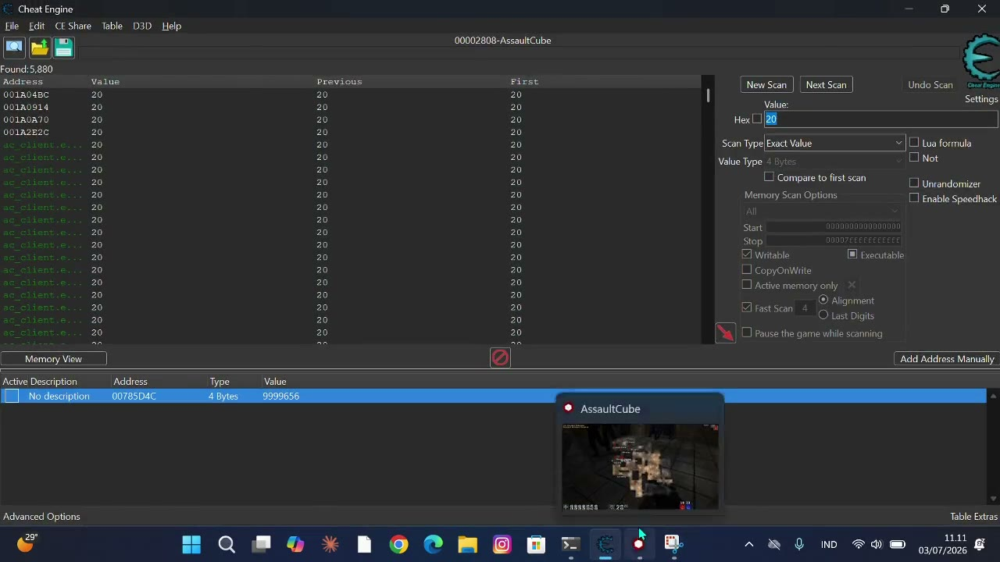
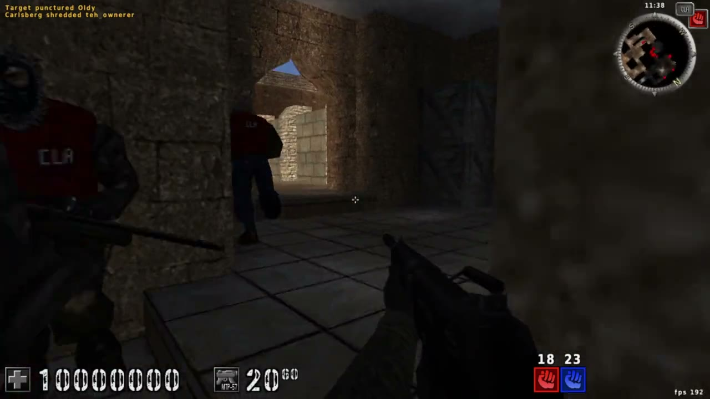
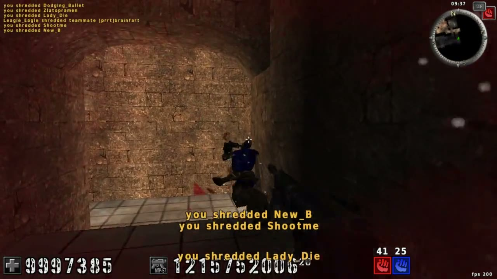
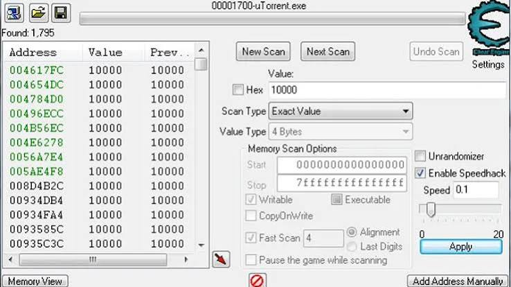

Cheat Engine adalah alat bedah memori paling legendaris — pemindai & debugger open-source yang membaca dan menulis RAM proses secara langsung. Di sinilah dasarnya dikuasai: scan sebuah nilai (misal health), ubah nilai itu di dalam game, lalu scan ulang berulang kali sampai ribuan kandidat menyusut jadi satu alamat yang tepat.
Tak berhenti di nilai sederhana. Teknik lanjutannya ikut dilahap: pointer scan (mencari rantai pointer dari base statis, supaya alamat tetap ketemu walau game di-restart), freeze untuk mengunci nilai, speedhack, sampai menyusun cheat table (.CT) yang bisa dipakai ulang. Seluruh tutorial bawaan langkah 1–9 dituntaskan.
Lalu dari teori ke praktik: diterapkan ke game offline sungguhan — membuat health, amunisi, dan koin tak terbatas, mengubah karakter biasa jadi kebal.
Karya ini berpasangan dengan MemHack: Cheat Engine adalah alat GUI standar industri yang dijalankan manusia; MemHack adalah versi CLI buatan sendiri yang bisa dikendalikan otomatis oleh AI — lahir tepat karena CE yang berjalan sebagai Admin justru memblokir otomasi lewat proteksi UIPI Windows.





Scan bertahap
Persempit dari ribuan kandidat ke satu alamat lewat scan berulang.
Pointer scan
Cari rantai pointer dari base statis agar alamat stabil tiap restart.
Freeze & speedhack
Kunci nilai (HP/amunisi tak terbatas) dan percepat waktu game.
Cheat table (.CT)
Susun tabel cheat yang tersimpan & bisa dipakai ulang.
Tutorial 1–9 tamat
Seluruh langkah latihan bawaan Cheat Engine dituntaskan.
Kembaran MemHack
Alat GUI (manusia) yang dilengkapi versi CLI buatan sendiri (AI).